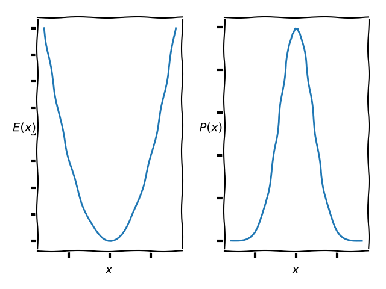
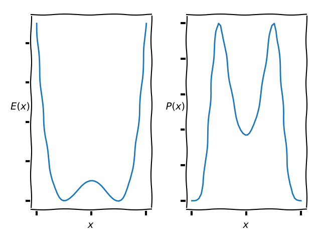

Welcome to my MPhys project public summary. This page is aimed at an audience with an A-level or
equivalent knowledge of Maths and Physics. Also, for the readers interested in programming, the Python scripts used to run the simulations and generate the animations for this page, along with the HTML and CSS code for the page itself can be found here .
HMC is an acronym for Hybrid Monte Carlo (or sometimes Hamiltonian Monte Carlo). The Hybrid/Hamiltonian title is because the algorithm borrows from Hamiltonian Dynamics (an alternative but equivalent formulation of Newton's equations) and the Monte Carlo part is because, well, it is a Monte Carlo method ... which leads us to our second question.
Monte Carlo methods are a huge family of algorithms with numerous applications across a massive range of subjects. Most numerical calculations are too difficult or impossible to do exactly - this is where Monte Carlo methods come in handy. Broadly speaking a Monte Carlo method works as follows; we have a set of possible values for the quantity we want to calculate, we take a random sample of that set, then we approximate the quantity as the average of our samples. It is normally a good idea to take lots of samples, otherwise your estimate on the value you are trying to calculate will likely be wrong.
This is all a bit abstract, it is easiest to get your head round Monte Carlo methods by looking at an example. So here is a classic- estimating $\pi$. We start off drawing a circle of area $\pi$ centred in a box of area $4$. Then we draw a random sample of points within the box. If a sample falls within the circle we count it as a 1, otherwise we count it as a 0. Then we take the average of these values, i.e. $\frac{\text{points in circle}}{\text{all points}}$. Intuitively this value should be $\frac{\pi}{4}$ since the the points within the circle estimate the area of the circle, whilst points in the square i.e. all samples, estimate the area of the box. Play the video below to see this Monte Carlo method live in action.
We are not taking nearly enough samples here, so the estimate of $\pi$ is only correct in the first significant figure. However, this animation visualises the process nicely. We can see the random points being generated, and after all the points are generated, points in the circle are counted (in green) and then the method described above is used to estimate $\pi$.
The HMC algorithm is an example of a MCMC (Markov chain Monte Carlo) algorithm.
Okay, this is the last one I promise. In the normal plain-old Monte Carlo we saw above there is a problem. The problem is that it is slow. In the above calculation of $\pi$ we took $200$ random samples and we saw it only got the first figure of $\pi$ correct. We could take more samples, however this is slow and computationally expensive, plus there is a better way. Certain samples in our set of random samples will have more of an overall contribution to the values we are trying to calculate than others. What we can choose to do is sample these values more frequently than the others to increase our estimate on the values we are calculating. In practice, the way we implement this is to find a probability distribution that models the system and draw our random samples according to this distribution. To do this we construct a Markov chain (a chain of random samples where the probability of the next sample taking on a particular value depends only on the value of the previous sample), and ensure that in the long time limit of this chain, the samples follow the behaviour ascribed by the probability distribution. We can then make calculations as before using these values, knowing that they give dominant contributions, and so overall we have to take fewer samples.
In the section above, we explained why we should use importance sampling, and sample according to a probability distribution, but how should we actually do this in practice? The HMC algorithm gives us one possible method. There is a result in statistical physics that tells us that given some energy function $E(x)$ for the state $x$ (lets keep things simple here and just take $x$ to be the position of a single particle of mass $1$) of our system, then the probability of our system being in that state is given by $P(x) \propto e^{-E\left(x\right)}$. So, if we have an energy function for our system, then we should take our samples as above according to the probability distribution $P(x)$. Suppose for example we had a system with an energy given by $E(x) = \frac{1}{2}x^{2}$, which is just the potential energy of a harmonic oscillator. Then the energy and corresponding probability distribution look like:

In order to perform the HMC algorithm we introduce fictitious-momenta into the system. This means we introduce a momentum $p$ to go with our position variable $x$ which we wish to sample. We then define a Hamiltonian function which is given by $H(x,p) = \frac{p^2}{2} + E(x)$.
We are then ready to run the steps of the algorithm:
If steps above are difficult to understand do not worry; all you need to know to understand this page is that in the HMC algorithm we begin with an initial state/sample, we generate a random momentum to go with it (the Gaussian distribution is a specific random distribution that is very common in physics), we calculate the the Hamiltonian quantity defined above, then evolve the values $x$ and $p$ in time using equations that are physically equivalent to the more ubiquitous $F = ma$. If the value of the Hamiltonian has decreased after the evolution of the system we accept the new value of $x$ as a sample and start again, this time using the new $x$ as our starting state, otherwise we accept the new $x$ with a probability that is determined by how much the Hamiltonian increased, and for larger increases the probability is smaller. Thinking about the Hamiltonian as the energy function of our joint $x, p$ system this is fairly intuitive; if the energy decreases in the system we accept the new state, and if it increases we accept it with a probability that depends on how much it increased by.
Again, this is all fairly abstract, so lets return to our example system where $E(x)=\frac{1}{2}x^2$ and see how it works, play the video below to see HMC in action:
The black dot represents our particle moving between samples. In the left animation we can see how its position and momentum evolve according to Hamiltonian dynamics, whilst on the right we see how the energy of our system changes. Accepted states are recorded in green, rejected ones in red. Notice how when a proposed state is reject the particle jumps back to its previous $x$ position on the x-axis, whereas when a state is accepted it starts where it left off in the $x$ variable.
Now that we understand how HMC works, lets have a look at one of its problems. Let us define an energy function $E(x) = (x^2-1)^2$, this is an example of an anharmonic potential. Plotting the energy function and the corresponding probability as above we get:

So we can see the most likely regions (where the probability has its maxima) for the particle to be in are where the energy is at its lowest (where the energy function has its minima). As before we can run a simulation and animate it to see what happens; this is exactly the same as the case above but for the new energy function:
It seems that for most of the simulation, the particle is stuck in the right well and no samples are drawn from the well on the left. This is bad. If we were to estimate the average value of $x$ this particular run would give $\bar{x} > 0 $ whereas since the energy function is symmetric, we know $\bar{x} = 0$ is the correct average value. The reason this is happening is that the two wells are separated by a region of low probability/high energy in the middle, so its very unlikely that a particle could move from one well to the other via the Hamiltonian dynamics that evolves $x$ to propose samples. So how do we fix this?
In order to fix this problem we do something called tempering. This basically means we boost the momentum of the particle in the first half of its trajectory, and reduce it in the second half, in the hope that we can get it over the region of low probability and into the other well. The reason this is called tempering is that it corresponds to increasing the temperature of the system, although the details of how this works are slightly beyond the scope of this summary, we can see this process in action in the video below:
Much better. We can see how the particle is now moving between both wells in the potential much more frequently than it was previously; this will give much better estimates on any values calculated.
In my MPhys project I applied HMC to the harmonic and anharmonic quantum oscillators, and used it to calculate various estimates of values in those systems. Although the implementation details are beyond the scope of this summary, Monte Carlo Methods are perfect for these calculations since analytically the calculations would require you to perform infinite dimensional integrals! Whereas above we had energy functions and probability that depended on a single variable $x$, in the quantum Monte Carlo calculations we have similar functions that could depend on hundreds or thousands of variables. However, in the case of the anharmonic quantum oscillator we still have the same problem as above, the system gets stuck in a potential well that is separated from another well by a region of low probability, and I applied the same tempering technique in an attempt to solve this problem.